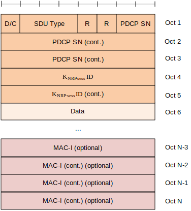

3GPP TS 38.323 V17.5.0 (2023-06)
Technical Specification
3rd Generation Partnership Project;
Technical Specification Group Radio Access Network;
NR;
Packet Data Convergence Protocol (PDCP) specification
(Release 17)
The present document has been developed within the 3rd Generation
Partnership Project (3GPP TM) and may be further elaborated
for the purposes of 3GPP.
The present document has not been subject to any approval process by the
3GPP Organizational Partners and shall not be implemented.
This Specification is provided for future development work within 3GPP
only. The Organizational Partners accept no liability for any use of
this Specification.
Specifications and Reports for implementation of the 3GPP TM
system should be obtained via the 3GPP Organizational Partners'
Publications Offices.
3GPP
Postal address
3GPP support office address
650 Route des Lucioles - Sophia Antipolis
Valbonne - FRANCE
Tel.: +33 4 92 94 42 00 Fax: +33 4 93 65 47 16
Internet
http://www.3gpp.org
Copyright Notification
No part may be reproduced except as authorized by written
permission.
The copyright and the foregoing restriction extend to reproduction in
all media.
© 2023, 3GPP Organizational Partners (ARIB, ATIS, CCSA, ETSI, TSDSI, TTA, TTC).
All rights reserved.
UMTS™ is a Trade Mark of ETSI registered for the benefit of its members
3GPP™ is a Trade Mark of ETSI registered for the benefit of its
Members and of the 3GPP Organizational Partners
LTE™ is a Trade Mark of ETSI registered for the benefit of its Members
and of the 3GPP Organizational Partners
GSM® and the GSM logo are registered and owned by the GSM Association
Foreword 6
1 Scope 7
2 References 7
3 Definitions and abbreviations 8
3.1 Definitions 8
3.2 Abbreviations 8
4 General 9
4.1 Introduction 9
4.2 Architecture 9
4.2.1 PDCP structure 9
4.2.2 PDCP entities 11
4.3 Services 13
4.3.1 Services provided to upper layers 13
4.3.2 Services expected from lower layers 13
4.4 Functions 14
5 Procedures 14
5.1 PDCP entity handling 14
5.1.1 PDCP entity establishment 14
5.1.2 PDCP entity re-establishment 14
5.1.3 PDCP entity release 16
5.1.4 PDCP entity suspend 16
5.1.5 PDCP entity reconfiguration 17
5.2 Data transfer 17
5.2.1 Transmit operation 17
5.2.2 Receive operation 18
5.2.2.1 Actions when a PDCP Data PDU is received from lower layers 18
5.2.2.2 Actions when a t-Reordering expires 20
5.2.2.3 Actions when the value of t-Reordering is reconfigured 20
5.2.3 Sidelink transmit operation 20
5.2.4 Sidelink receive operation 20
5.3 SDU discard 21
5.4 Status reporting 21
5.4.1 Transmit operation 21
5.4.2 Receive operation 22
5.5 Data recovery 22
5.6 Data volume calculation 22
5.7 Robust header compression and decompression 23
5.7.1 Supported header compression protocols and profiles 23
5.7.2 Configuration of ROHC 23
5.7.3 Protocol parameters 24
5.7.4 Header compression using ROHC 24
5.7.5 Header decompression using ROHC 25
5.7.6 PDCP Control PDU for interspersed ROHC feedback 25
5.7.6.1 Transmit Operation 25
5.7.6.2 Receive Operation 25
5.8 Ciphering and deciphering 25
5.9 Integrity protection and verification 26
5.10 Handling of unknown, unforeseen, and erroneous protocol data 27
5.11 PDCP duplication 27
5.11.1 Activation/Deactivation of PDCP duplication 27
5.11.2 Duplicate PDU discard 27
5.12 Ethernet header compression and decompression 28
5.12.1 Supported header compression protocols 28
5.12.2 Configuration of EHC 28
5.12.3 Protocol parameters 28
5.12.4 Header compression using EHC 28
5.12.5 Header decompression using EHC 28
5.12.6 PDCP Control PDU for EHC feedback 28
5.12.6.1 Transmit Operation 28
5.12.6.2 Receive Operation 28
5.12.7 Simultaneous configuration of ROHC and EHC 29
5.13 Uplink data switching 29
5.14 Uplink Data compression and decompression 30
5.14.1 UDC protocol 30
5.14.2 Configuration of UDC 30
5.14.3 UDC header 30
5.14.4 Uplink data compression 30
5.14.5 PDCP Control PDU for UDC feedback 30
5.14.6 Pre-defined dictionary 31
5.14.7 UDC buffer reset procedure 31
5.14.8 UDC checksum error handling 31
6 Protocol data units, formats, and parameters 31
6.1 Protocol data units 31
6.1.1 Data PDU 31
6.1.2 Control PDU 31
6.2 Formats 32
6.2.1 General 32
6.2.2 Data PDU 32
6.2.2.1 Data PDU for SRBs 32
6.2.2.2 Data PDU for DRBs and MRBs with 12 bits PDCP SN 32
6.2.2.3 Data PDU for DRBs and MRBs with 18 bits PDCP SN 33
6.2.2.4 Data PDU for sidelink DRBs for groupcast and broadcast, for the sidelink SRB0 and for the sidelink SRB4 33
6.2.2.5 Data PDU for sidelink SRBs for unicast 34
6.2.2.6 Data PDU for sidelink DRBs for unicast with 12 bits PDCP SN 34
6.2.2.7 Data PDU for sidelink DRBs for unicast with 18 bits PDCP SN 35
6.2.3 Control PDU 36
6.2.3.1 Control PDU for PDCP status report 36
6.2.3.2 Control PDU for interspersed ROHC feedback 37
6.2.3.3 Control PDU for EHC feedback 37
6.2.3.4 Control PDU for UDC feedback 37
6.3 Parameters 37
6.3.1 General 37
6.3.2 PDCP SN 38
6.3.3 Data 38
6.3.4 MAC-I 38
6.3.5 COUNT 38
6.3.6 R 39
6.3.7 D/C 39
6.3.8 PDU type 39
6.3.9 FMC 39
6.3.10 Bitmap 39
6.3.11 Interspersed ROHC feedback 39
6.3.12 SDU Type 40
6.3.13 KNRP-sess ID 40
6.3.14 FE 40
7 State variables, constants, and timers 40
7.1 State variables 40
7.2 Constants 41
7.3 Timers 41
Annex A (normative): Ethernet Header Compression (EHC) protocol 42
A.1 EHC principle 42
A.2 EHC packet format and parameters 43
A.2.1 EHC packet format 43
A.2.1.1 EHC Full Header packet and EHC Compressed Header packet 43
A.2.1.2 EHC feedback packet 44
A.2.2 Parameters 45
A.2.2.1 F/C 45
A.2.2.2 CID 45
Annex B (normative): Uplink Data Compression Protocol 45
B.1 UDC general description 45
B.2 UDC packet format and parameters 45
B.2.1 UDC Header and UDC Data Block format 45
B.2.2 UDC parameters 46
B.2.2.1 FU 46
B.2.2.2 FR 46
B.2.2.3 Checksum 46
B.2.3 An example of UDC Checksum calculation 46
Annex C (informative): Change history 47
This Technical Specification has been produced by the 3rd Generation Partnership Project (3GPP).
The contents of the present document are subject to continuing work within the TSG and may change following formal TSG approval. Should the TSG modify the contents of the present document, it will be re-released by the TSG with an identifying change of release date and an increase in version number as follows:
Version x.y.z
where:
x the first digit:
1 presented to TSG for information;
2 presented to TSG for approval;
3 or greater indicates TSG approved document under change control.
y the second digit is incremented for all changes of substance, i.e. technical enhancements, corrections, updates, etc.
z the third digit is incremented when editorial only changes have been incorporated in the document.
The present document provides the description of the Packet Data Convergence Protocol (PDCP).
The following documents contain provisions which, through reference in this text, constitute provisions of the present document.
- References are either specific (identified by date of publication, edition number, version number, etc.) or non‑specific.
- For a specific reference, subsequent revisions do not apply.
- For a non-specific reference, the latest version applies. In the case of a reference to a 3GPP document (including a GSM document), a non-specific reference implicitly refers to the latest version of that document in the same Release as the present document.
[1] 3GPP TR 21.905: "Vocabulary for 3GPP Specifications".
[2] 3GPP TS 38.300: "NG Radio Access Network; Overall description".
[3] 3GPP TS 38.331: "NR Radio Resource Control (RRC); Protocol Specification".
[4] 3GPP TS 38.321: "NR Medium Access Control (MAC) protocol specification".
[5] 3GPP TS 38.322: "NR Radio Link Control (RLC) protocol specification".
[6] 3GPP TS 33.501: "Security Architecture and Procedures for 5G System ".
[7] IETF RFC 5795: "The RObust Header Compression (ROHC) Framework".
[8] IETF RFC 3095: "RObust Header Compression (ROHC): Framework and four profiles: RTP, UDP, ESP and uncompressed".
[9] IETF RFC 4815: "RObust Header Compression (ROHC): Corrections and Clarifications to RFC 3095".
[10] IETF RFC 6846: "RObust Header Compression (ROHC): A Profile for TCP/IP (ROHC-TCP)".
[11] IETF RFC 5225: "RObust Header Compression (ROHC) Version 2: Profiles for RTP, UDP, IP, ESP and UDP Lite".
[12] 3GPP TS 36.321: "Evolved Universal Terrestrial Radio Access (E-UTRA) Medium Access Control (MAC) protocol specification".
[13] 3GPP TS 23.287: "Architecture enhancements for 5G System (5GS) to support Vehicle-to-Everything (V2X) services".
[14] 3GPP TS 33.536: "Security Aspect of 3GPP Support for Advanced V2X Services".
[15] IEEE Standard 802.3™-2018: "Ethernet".
[16] 3GPP TS 24.587: "Vehicle-to-Everything (V2X) services in 5G System (5GS), Stage 3".
[17] 3GPP TS 33.401: "3GPP System Architecture Evolution (SAE); Security Architecture".
[18] 3GPP TS 23.304: "Proximity based Services (ProSe) in the 5G System (5GS)".
[19] IETF RFC 1951: "DEFLATE Compressed Data Format Specification version 1.3".
[20] IETF RFC 3485: "The Session Initiation Protocol (SIP) and Session Description Protocol (SDP) Static Dictionary for Signaling Compression (SigComp)".
[21] IETF RFC 1979: "PPP Deflate Protocol".
[22] 3GPP TS 38.351: "NR; Sidelink Relay Adaptation Protocol (SRAP) Specification".
For the purposes of the present document, the terms and definitions given in TR 21.905 [1] and the following apply. A term defined in the present document takes precedence over the definition of the same term, if any, in TR 21.905 [1].
AM DRB: a data radio bearer which utilizes RLC AM.
AM MRB: an MRB associated with at least one AM RLC bearer for PTP transmission.
Broadcast MRB: a radio bearer configured for MBS broadcast delivery.
DAPS bearer: a bearer whose radio protocols are located in both the source gNB and the target gNB during DAPS handover to use both source gNB and target gNB resources.
MBS Radio Bearer: a radio bearer that is configured for MBS delivery.
Multicast MRB: a radio bearer configured for MBS multicast delivery.
Non-split bearer: a bearer whose radio protocols are located in either the MgNB or the SgNB to use MgNB or SgNB resource, respectively.
NR sidelink communication: AS functionality enabling at least V2X communication as defined in TS 23.287 [13] and ProSe communication (including ProSe non-Relay and UE-to-Network Relay communication) as defined in TS 23.304 [18], between two or more nearby UEs, using NR technology but not traversing any network node.
NR sidelink discovery: AS functionality enabling ProSe non-Relay Discovery and ProSe UE-to-Network Relay discovery for Proximity based Services as defined in TS 23.304 [18] between two or more nearby UEs, using NR technology but not traversing any network node.
NR sidelink transmission: any NR Sidelink-based transmission, including both transmission for NR sidelink discovery and transmission for NR sidelink communication.
PDCP data volume: the amount of data available for transmission in a PDCP entity.
Split bearer: in dual connectivity, a bearer whose radio protocols are located in both the MgNB and the SgNB to use both MgNB and SgNB resources.
Split secondary RLC entity: in dual connectivity, the RLC entity other than the primary RLC entity which is responsible for split bearer operation. If the PDCP entity is associated with two RLC entities, the split secondary RLC entity is the RLC entity other than the primary RLC entity. If the PDCP entity is associated with more than two RLC entities, the split secondary RLC entity is configured by upper layers.
UM DRB: a data radio bearer which utilizes RLC UM.
UM MRB: an MRB associated with only RLC UM.
For the purposes of the present document, the abbreviations given in TR 21.905 [1] and the following apply. An abbreviation defined in the present document takes precedence over the definition of the same abbreviation, if any, in TR 21.905 [1].
AM Acknowledged Mode
ARP Address Resolution Protocol
CID Context Identifier
DAPS Dual Active Protocol Stack
DRB Data Radio Bearer carrying user plane data
EHC Ethernet Header Compression
FIFO First In First Out
gNB NR Node B
HFN Hyper Frame Number
IETF Internet Engineering Task Force
IP Internet Protocol
MAC Medium Access Control
MAC-I Message Authentication Code for Integrity
MBS Multicast/Broadcast Services
MRB MBS Radio Bearer
MTCH MBS Traffic Channel
PDCP Packet Data Convergence Protocol
PDU Protocol Data Unit
RB Radio Bearer
RFC Request For Comments
RLC Radio Link Control
ROHC RObust Header Compression
RRC Radio Resource Control
RTP Real Time Protocol
SAP Service Access Point
SCCH Sidelink Control Channel
SDU Service Data Unit
SLRB Sidelink Radio Bearer carrying NR sidelink communication or NR sidelink discovery
SN Sequence Number
SRAP Sidelink Relay Adaptation Protocol
SRB Signalling Radio Bearer carrying control plane data
STCH Sidelink Traffic Channel
TCP Transmission Control Protocol
UDC Uplink Data Compression
UDP User Datagram Protocol
UE User Equipment
UM Unacknowledged Mode
U2N UE-to-Network
X-MAC Computed MAC-I
The present document describes the functionality of the PDCP.
Figure 4.2.1-1 represents one possible structure for the PDCP sublayer, and Figure 4.2.1-2 represents one possible structure for the PDCP sublayer used in L2 U2N relay case; they should not restrict implementation. The figures are based on the radio interface protocol architecture defined in TS 38.300 [2].
Figure 4.2.1-1: PDCP layer, structure view (normal)
Figure 4.2.1-2: PDCP layer, structure view (L2 U2N relay)
The PDCP sublayer is configured by upper layers TS 38.331 [3]. The PDCP sublayer is used for RBs mapped on DCCH, DTCH, MTCH, SCCH, and STCH type of logical channels. The PDCP sublayer is not used for any other type of logical channels.
Each RB (except for SRB0 for Uu interface) is associated with one PDCP entity. Each PDCP entity is associated with one, two, three, four, six, or eight RLC entities depending on the RB characteristic (e.g. uni-directional/bi-directional or split/non-split) or RLC mode:
- For split bearers, each PDCP entity is associated with two UM RLC entities (for same direction), four UM RLC entities (two for each direction), or two AM RLC entities;
- For RBs configured with PDCP duplication, each PDCP entity is associated with N UM RLC entities (for same direction), 2 × N UM RLC entities (N for each direction), or N AM RLC entities, where 2 <= N <= 4;
- For DAPS bearers, each PDCP entity is associated with two UM RLC entities (for same direction, one for source and one for target cell), four UM RLC entities (two for each direction on source cell and target cell), or two AM RLC entities (one for source cell and one for target cell);
- For UM MRBs, each PDCP entity is associated with one UM RLC entity (for MTCH or for downlink DTCH), two UM RLC entities (one for MTCH and one for downlink DTCH, or one for downlink DTCH and one for uplink DTCH), or three UM RLC entities (one for MTCH, one for downlink DTCH, and one for uplink DTCH);
- For AM MRBs, each PDCP entity is associated with one AM RLC entity (for downlink DTCH and uplink DTCH), or one UM RLC entity (for MTCH) and one AM RLC entity (for downlink DTCH and uplink DTCH);
- Otherwise, each PDCP entity is associated with one UM RLC entity, two UM RLC entities (one for each direction), or one AM RLC entity.
For the case of L2 U2N relay, all PDCP entities are associated with one SRAP entity.
The PDCP entities are located in the PDCP sublayer. Several PDCP entities may be defined for a UE. Each PDCP entity is carrying the data of one radio bearer. A PDCP entity is associated either to the control plane or the user plane depending on which radio bearer it is carrying data for.
Figure 4.2.2-1 represents the functional view of the PDCP entity for the PDCP sublayer; it should not restrict implementation. The figure is based on the radio interface protocol architecture defined in TS 38.300 [2].
For split bearers and DAPS bearers, routing is performed in the transmitting PDCP entity.
A PDCP entity associated with DRB can be configured by upper layers TS 38.331 [3] to use header compression or uplink data compression (UDC). A PDCP entity associated with MRB can be configured by upper layers TS 38.331 [3] to use header compression. In this version of the specification, the robust header compression protocol (ROHC), the Ethernet header compression protocol (EHC) and UDC are supported. Each header compression protocol is independently configured for a DRB/MRB.
Figure 4.2.2-1: PDCP layer, functional view
Figure 4.2.2-2 represents the functional view of the PDCP entity associated with the DAPS bearer for the PDCP sublayer; it should not restrict implementation. The figure is based on the radio interface protocol architecture defined in TS 38.300 [2].
For DAPS bearers, the PDCP entity is configured with two sets of security functions and keys and two sets of header compression protocols.
Figure 4.2.2-2: PDCP layer associated with DAPS bearer, functional view
The PDCP layer provides its services to the RRC or SDAP layers. The following services are provided by PDCP to upper layers:
- transfer of user plane data;
- transfer of control plane data;
- header compression;
- uplink data compression;
- ciphering;
- integrity protection.
The maximum supported size of a PDCP SDU is 9000 bytes. The maximum supported size of a PDCP Control PDU is 9000 bytes.
A PDCP entity expects the following services from lower layers per RLC entity (for a detailed description see TS 38.322 [5]):
- acknowledged data transfer service, including indication of successful delivery of PDCP PDUs;
- unacknowledged data transfer service.
A PDCP entity expects the following service from SRAP entity (for a detailed description see TS 38.351 [22]), if the PDCP entity is associated with an SRAP entity:
- data transfer.
The PDCP layer supports the following functions:
- transfer of data (user plane or control plane);
- maintenance of PDCP SNs;
- header compression and decompression using the ROHC protocol;
- header compression and decompression using the EHC protocol;
- uplink data compression and decompression using the UDC protocol;
- ciphering and deciphering;
- integrity protection and integrity verification;
- timer based SDU discard;
- for split bearers and DAPS bearer, routing;
- duplication;
- reordering and in-order delivery;
- out-of-order delivery;
- duplicate discarding.
When upper layers request a PDCP entity establishment for a radio bearer for Uu or PC5 interface; or for NR sidelink communication for groupcast and broadcast or for sidelink SRB4, when receiving the first PDCP PDU, and there is not yet a corresponding PDCP entity, the UE shall:
- establish a PDCP entity for the radio bearer;
- set the state variables of the PDCP entity to initial values;
- follow the procedures in clause 5.2.
NOTE: The receiving PDCP entity of sidelink SRB0 and sidelink SRB1 is established same as NR sidelink groupcast and broadcast.
When upper layers request a PDCP entity re-establishment, the UE shall additionally perform once the procedures described in this clause for Uu or PC5 interface. After performing the procedures in this clause, the UE shall follow the procedures in clause 5.2.
When upper layers request a PDCP entity re-establishment, the transmitting PDCP entity shall:
- for UM DRBs and AM DRBs, reset the ROHC protocol for uplink and start with an IR state in U-mode (as defined in RFC 3095 [8] and RFC 4815 [9]) if drb-ContinueROHC is not configured in TS 38.331 [3];
- for UM DRBs and AM DRBs, reset the EHC protocol for uplink if drb-ContinueEHC-UL is not configured in TS 38.331 [3];
- for AM DRBs, reset the UDC compression buffer to all zeros and prefill the dictionary if drb-ContinueUDC is not configured in TS 38.331 [3];
- for SRBs and UM DRBs, set TX_NEXT to the initial value;
- for SRBs, discard all stored PDCP SDUs and PDCP PDUs;
- apply the ciphering algorithm and key provided by upper layers during the PDCP entity re-establishment procedure;
- apply the integrity protection algorithm and key provided by upper layers during the PDCP entity re-establishment procedure;
- for UM DRBs, for each PDCP SDU already associated with a PDCP SN but for which a corresponding PDU has not previously been submitted to lower layers, and;
- for AM DRBs for Uu interface whose PDCP entities were suspended, from the first PDCP SDU for which the successful delivery of the corresponding PDCP Data PDU has not been confirmed by lower layers, for each PDCP SDU already associated with a PDCP SN:
- consider the PDCP SDUs as received from upper layer;
- perform transmission of the PDCP SDUs in ascending order of the COUNT value associated to the PDCP SDU prior to the PDCP re-establishment without restarting the discardTimer, as specified in clause 5.2.1;
- for AM DRBs whose PDCP entities were not suspended, from the first PDCP SDU for which the successful delivery of the corresponding PDCP Data PDU has not been confirmed by lower layers, perform retransmission or transmission of all the PDCP SDUs already associated with PDCP SNs in ascending order of the COUNT values associated to the PDCP SDU prior to the PDCP entity re-establishment as specified below:
- perform header compression of the PDCP SDU using ROHC as specified in the clause 5.7.4 and/or using EHC as specified in the clause 5.12.4;
- If drb-ContinueUDC is configured and if the PDCP SDU has been compressed before:
- submit the PDCP SDU previously compressed to integrity protection and ciphering function;
- else:
- perform uplink data compression of the PDCP SDU as specified in clause 5.14.4, and submit the PDCP SDU to integrity protection and ciphering function;
- perform integrity protection and ciphering of the PDCP SDU using the COUNT value associated with this PDCP SDU as specified in the clause 5.9 and 5.8;
- submit the resulting PDCP Data PDU to lower layer, as specified in clause 5.2.1.
When upper layers request a PDCP entity re-establishment, the receiving PDCP entity shall:
- process the PDCP Data PDUs that are received from lower layers due to the re-establishment of the lower layers, as specified in the clause 5.2.2.1;
- for SRBs, discard all stored PDCP SDUs and PDCP PDUs;
- for SRBs, UM DRBs and UM MRBs, if t-Reordering is running:
- stop and reset t-Reordering;
- for UM DRBs and UM MRBs, deliver all stored PDCP SDUs to the upper layers in ascending order of associated COUNT values after performing header decompression;
- for AM DRBs and AM MRBs for Uu interface, perform header decompression using ROHC for all stored PDCP SDUs if drb-ContinueROHC is not configured in TS 38.331 [3];
- for AM DRBs for PC5 interface, perform header decompression using ROHC for all stored PDCP IP SDUs;
- for AM DRBs and AM MRBs for Uu interface, perform header decompression using EHC for all stored PDCP SDUs if drb-ContinueEHC-DL is not configured in TS 38.331 [3];
- for UM DRBs, AM DRBs, UM MRBs and AM MRBs, reset the ROHC protocol for downlink and start with NC state in U-mode (as defined in RFC 3095 [8] and RFC 4815 [9]) if drb-ContinueROHC is not configured in TS 38.331 [3];
- for UM DRBs, AM DRBs, UM MRBs and AM MRBs, reset the EHC protocol for downlink if drb-ContinueEHC-DL is not configured in TS 38.331 [3];
- for SRBs and UM DRBs, set RX_NEXT and RX_DELIV to the initial value;
- for UM MRBs and AM MRBs, set RX_NEXT and RX_DELIV to the initial value if initialRX-DELIV is configured in TS 38.331 [3];
- apply the ciphering algorithm and key provided by upper layers during the PDCP entity re-establishment procedure;
- apply the integrity protection algorithm and key provided by upper layers during the PDCP entity re-establishment procedure.
NOTE 1: After PDCP re-establishment on a sidelink SRB/DRB, UE determines when to transmit and receive with the new key and discard the old key as specified in TS 33.536 [14].
NOTE 2: At PDCP re-establishment, the MRB type (i.e. UM MRB or AM MRB) is determined by the target configuration.
When upper layers request a PDCP entity release for a radio bearer for Uu or PC5 interface, the UE shall:
- discard all stored PDCP SDUs and PDCP PDUs in the transmitting PDCP entity;
- for UM DRBs, AM DRBs, UM MRBs and AM MRBs, deliver the PDCP SDUs stored in the receiving PDCP entity to upper layers in ascending order of associated COUNT values after performing header decompression, if not decompressed before;
- release the PDCP entity for the radio bearer.
NOTE: For NR sidelink communication for groupcast and broadcast or for sidelink SRB4, the receiving PDCP entity release for an SLRB is up to UE implementation.
When upper layers request a PDCP entity suspend, the transmitting PDCP entity shall:
- set TX_NEXT to the initial value;
- discard all stored PDCP PDUs;
When upper layers request a PDCP entity suspend, the receiving PDCP entity shall:
- if t-Reordering is running:
- stop and reset t-Reordering;
- deliver all stored PDCP SDUs to the upper layers in ascending order of associated COUNT values after performing header decompression;
- set RX_NEXT and RX_DELIV to the initial value, except for MRB.
When upper layers reconfigure the PDCP entity to configure DAPS, the UE shall:
- establish a ciphering function for the radio bearer and apply the ciphering algorithm and key provided by upper layers for the ciphering function;
- establish an integrity protection function for the radio bearer and apply the integrity protection algorithm and key provided by upper layers for the integrity protection function;
- establish a header compression protocol for the radio bearer and apply the header compression configuration provided by upper layers for the header compression protocol.
When upper layers reconfigure the PDCP entity to release DAPS, the UE shall:
- release the ciphering function associated to the released RLC entity for the radio bearer;
- release the integrity protection function associated to the released RLC entity for the radio bearer;
- release the header compression protocol associated to the released RLC entity for the radio bearer.
NOTE 1: The state variables which control the transmission and reception operation should not be reset, and the timers including t-Reordering and discardTimer keep running during PDCP entity reconfiguration procedure.
NOTE 2: Before releasing the header compression protocol associated to the released RLC entity, how to handle all stored PDCP SDUs received from the released RLC entity is left up to UE implementation.
NOTE 3: No special handling for the header compression protocol is defined to avoid potential security issue (e.g. keystream reuse) for DAPS handover with no security key change.
At reception of a PDCP SDU from upper layers, the transmitting PDCP entity shall:
- start the discardTimer associated with this PDCP SDU (if configured).
For a PDCP SDU received from upper layers, the transmitting PDCP entity shall:
- associate the COUNT value corresponding to TX_NEXT to this PDCP SDU;
NOTE 1: Associating more than half of the PDCP SN space of contiguous PDCP SDUs with PDCP SNs, when e.g., the PDCP SDUs are discarded or transmitted without acknowledgement, may cause HFN desynchronization problem. How to prevent HFN desynchronization problem is left up to UE implementation.
- perform header compression of the PDCP SDU using ROHC as specified in the clause 5.7.4 and/or using EHC as specified in the clause 5.12.4;
- perform uplink data compression of the PDCP SDU as specified in clause 5.14.4;
- perform integrity protection, and ciphering using the TX_NEXT as specified in the clause 5.9 and 5.8, respectively;
- set the PDCP SN of the PDCP Data PDU to TX_NEXT modulo 2[pdcp-SN-SizeUL];
- increment TX_NEXT by one;
- submit the resulting PDCP Data PDU to lower layer as specified below.
When submitting a PDCP PDU to lower layer, the transmitting PDCP entity shall:
- if the transmitting PDCP entity is associated with an SRAP entity:
- submit the PDCP PDU to the associated SRAP entity;
- else, if the transmitting PDCP entity is associated with one RLC entity:
- submit the PDCP PDU to the associated RLC entity;
- else, if the transmitting PDCP entity is associated with at least two RLC entities:
- if the PDCP duplication is activated for the RB:
- if the PDCP PDU is a PDCP Data PDU:
- duplicate the PDCP Data PDU and submit the PDCP Data PDU to the associated RLC entities activated for PDCP duplication;
- else:
- submit the PDCP Control PDU to the primary RLC entity;
- else (i.e. the PDCP duplication is deactivated for the RB or the RB is a DAPS bearer):
- if the split secondary RLC entity is configured; and
- if the total amount of PDCP data volume and RLC data volume pending for initial transmission (as specified in TS 38.322 [5]) in the primary RLC entity and the split secondary RLC entity is equal to or larger than ul-DataSplitThreshold:
- submit the PDCP PDU to either the primary RLC entity or the split secondary RLC entity;
- else, if the transmitting PDCP entity is associated with the DAPS bearer:
- if the uplink data switching has not been requested:
- submit the PDCP PDU to the RLC entity associated with the source cell;
- else:
- if the PDCP PDU is a PDCP Data PDU:
- submit the PDCP Data PDU to the RLC entity associated with the target cell;
- else:
- if the PDCP Control PDU is associated with source cell:
- submit the PDCP Control PDU to the RLC entity associated with the source cell;
- else:
- submit the PDCP Control PDU to the RLC entity associated with the target cell;
- else:
- submit the PDCP PDU to the primary RLC entity.
NOTE 2: If the transmitting PDCP entity is associated with two RLC entities, the UE should minimize the amount of PDCP PDUs submitted to lower layers before receiving request from lower layers and minimize the PDCP SN gap between PDCP PDUs submitted to two associated RLC entities to minimize PDCP reordering delay in the receiving PDCP entity.
In this clause, following definitions are used:
- HFN(State Variable): the HFN part (i.e. the number of most significant bits equal to HFN length) of the State Variable;
- SN(State Variable): the SN part (i.e. the number of least significant bits equal to PDCP SN length) of the State Variable;
- RCVD_SN: the PDCP SN of the received PDCP Data PDU, included in the PDU header;
- RCVD_HFN: the HFN of the received PDCP Data PDU, calculated by the receiving PDCP entity;
- RCVD_COUNT: the COUNT of the received PDCP Data PDU = [RCVD_HFN, RCVD_SN].
At reception of a PDCP Data PDU from lower layers, the receiving PDCP entity shall determine the COUNT value of the received PDCP Data PDU, i.e. RCVD_COUNT, as follows:
- if RCVD_SN < SN(RX_DELIV) – Window_Size:
- RCVD_HFN = HFN(RX_DELIV) + 1.
- else if RCVD_SN >= SN(RX_DELIV) + Window_Size:
- RCVD_HFN = HFN(RX_DELIV) – 1.
- else:
- RCVD_HFN = HFN(RX_DELIV);
- RCVD_COUNT = [RCVD_HFN, RCVD_SN].
After determining the COUNT value of the received PDCP Data PDU = RCVD_COUNT, the receiving PDCP entity shall:
- perform deciphering and integrity verification of the PDCP Data PDU using COUNT = RCVD_COUNT;
- if integrity verification fails:
- indicate the integrity verification failure to upper layer;
- discard the PDCP Data PDU and consider it as not received;
- if RCVD_COUNT < RX_DELIV; or
- if the PDCP Data PDU with COUNT = RCVD_COUNT has been received before:
- discard the PDCP Data PDU;
If the received PDCP Data PDU with COUNT value = RCVD_COUNT is not discarded above, the receiving PDCP entity shall:
- store the resulting PDCP SDU in the reception buffer;
- if RCVD_COUNT >= RX_NEXT:
- update RX_NEXT to RCVD_COUNT + 1.
- if outOfOrderDelivery is configured:
- deliver the resulting PDCP SDU to upper layers after performing header decompression using EHC.
- if RCVD_COUNT = RX_DELIV:
- deliver to upper layers in ascending order of the associated COUNT value after performing header decompression, if not decompressed before;
- all stored PDCP SDU(s) with consecutively associated COUNT value(s) starting from COUNT = RX_DELIV;
- update RX_DELIV to the COUNT value of the first PDCP SDU which has not been delivered to upper layers, with COUNT value > RX_DELIV;
- if t-Reordering is running, and if RX_DELIV >= RX_REORD:
- stop and reset t-Reordering.
- if t-Reordering is not running (includes the case when t-Reordering is stopped due to actions above), and RX_DELIV < RX_NEXT:
- update RX_REORD to RX_NEXT;
- start t-Reordering.
When t-Reordering expires, the receiving PDCP entity shall:
- deliver to upper layers in ascending order of the associated COUNT value after performing header decompression, if not decompressed before:
- all stored PDCP SDU(s) with associated COUNT value(s) < RX_REORD;
- all stored PDCP SDU(s) with consecutively associated COUNT value(s) starting from RX_REORD;
- update RX_DELIV to the COUNT value of the first PDCP SDU which has not been delivered to upper layers, with COUNT value >= RX_REORD;
- if RX_DELIV < RX_NEXT:
- update RX_REORD to RX_NEXT;
- start t-Reordering.
When the value of the t-Reordering is reconfigured by upper layers while the t-Reordering is running, the receiving PDCP entity shall:
- update RX_REORD to RX_NEXT;
- stop and restart t-Reordering.
For NR sidelink transmission of the SLRB, the UE shall follow the procedures in clause 5.2.1 with following modification:
- perform the header compression using ROHC as specified in clause 5.7.4, if SDU Type is IP;
- set the PDCP SN of the PDCP Data PDU to TX_NEXT modulo 2[sl-PDCP-SN-Size].
For sidelink reception of the SLRB, the UE shall follow the procedures in clause 5.2.2 with following modification:
- perform the header decompression using ROHC as specified in clause 5.7.5, if SDU Type is IP.
NOTE: For reception of sidelink SRBs except sidelink SRB3, the UE may deliver the PDCP SDU to the upper layer along with an indication whether it is PC5-S message or NR sidelink discovery message.
When the discardTimer expires for a PDCP SDU, or the successful delivery of a PDCP SDU is confirmed by PDCP status report, the transmitting PDCP entity shall discard the PDCP SDU along with the corresponding PDCP Data PDU. If the corresponding PDCP Data PDU has already been submitted to lower layers, the discard is indicated to lower layers.
For SRBs, when upper layers request a PDCP SDU discard, the PDCP entity shall discard all stored PDCP SDUs and PDCP PDUs.
NOTE: Discarding a PDCP SDU already associated with a PDCP SN causes a SN gap in the transmitted PDCP Data PDUs, which increases PDCP reordering delay in the receiving PDCP entity. It is up to UE implementation how to minimize SN gap after SDU discard.
For AM DRBs configured by upper layers to send a PDCP status report in the uplink (statusReportRequired in TS 38.331 [3]), the receiving PDCP entity shall trigger a PDCP status report when:
- upper layer requests a PDCP entity re-establishment;
- upper layer requests a PDCP data recovery;
- upper layer requests a uplink data switching;
- upper layer reconfigures the PDCP entity to release DAPS and daps-SourceRelease is configured in TS 38.331 [3].
For UM DRBs configured by upper layers to send a PDCP status report in the uplink (statusReportRequired in TS 38.331 [3]), the receiving PDCP entity shall trigger a PDCP status report when:
- upper layer requests a uplink data switching.
For AM DRBs in the sidelink, the receiving PDCP entity shall trigger a PDCP status report when:
- upper layer requests a PDCP entity re-establishment.
For AM MRBs configured by upper layers to send a PDCP status report in the uplink (statusReportRequired in TS 38.331 [3]), the receiving PDCP entity shall trigger a PDCP status report when:
- upper layer requests a PDCP entity re-establishment;
- upper layer requests a PDCP data recovery.
If a PDCP status report is triggered, the receiving PDCP entity shall:
- compile a PDCP status report as indicated below by:
- setting the FMC field to RX_DELIV;
- if RX_DELIV < RX_NEXT:
- allocating a Bitmap field of length in bits equal to the number of COUNTs from and not including the first missing PDCP SDU up to and including the last out-of-sequence PDCP SDUs, rounded up to the next multiple of 8, or up to and including a PDCP SDU for which the resulting PDCP Control PDU size is equal to 9000 bytes, whichever comes first;
- setting in the bitmap field as '0' for all PDCP SDUs that have not been received, and optionally PDCP SDUs for which decompression have failed;
- setting in the bitmap field as '1' for all PDCP SDUs that have been received;
- submit the PDCP status report to lower layers as the first PDCP PDU for transmission via the transmitting PDCP entity as specified in clause 5.2.1 for Uu interface and in clause 5.2.3 for PC5 interface.
For AM DRBs, when a PDCP status report is received in the downlink or in the sidelink, the transmitting PDCP entity shall:
- consider for each PDCP SDU, if any, with the bit in the bitmap set to '1', or with the associated COUNT value less than the value of FMC field as successfully delivered, and discard the PDCP SDU as specified in clause 5.3.
For AM DRBs, when upper layers request a PDCP data recovery for a radio bearer, the transmitting PDCP entity shall:
- perform retransmission of all the PDCP Data PDUs previously submitted to re-established or released AM RLC entities in ascending order of the associated COUNT values for which the successful delivery has not been confirmed by lower layers, following the data submission procedure in clause 5.2.1.
After performing the above procedures, the transmitting PDCP entity shall follow the procedures in clause 5.2.1.
For the purpose of MAC buffer status reporting, the transmitting PDCP entity shall consider the following as PDCP data volume:
- the PDCP SDUs for which no PDCP Data PDUs have been constructed;
- the PDCP Data PDUs that have not been submitted to lower layers;
- the PDCP Control PDUs;
- for AM DRBs, the PDCP SDUs to be retransmitted according to clause 5.1.2 and clause 5.13;
- for AM DRBs, the PDCP Data PDUs to be retransmitted according to clause 5.5.
If the transmitting PDCP entity is associated with at least two RLC entities, when indicating the PDCP data volume to a MAC entity for BSR triggering and Buffer Size calculation (as specified in TS 38.321 [4] and TS 36.321 [12]), the transmitting PDCP entity shall:
- if the PDCP duplication is activated for the RB:
- indicate the PDCP data volume to the MAC entity associated with the primary RLC entity;
- indicate the PDCP data volume excluding the PDCP Control PDU to the MAC entity associated with the RLC entity other than the primary RLC entity activated for PDCP duplication;
- indicate the PDCP data volume as 0 to the MAC entity associated with RLC entity deactivated for PDCP duplication;
- else (i.e. the PDCP duplication is deactivated for the RB or the RB is a DAPS bearer):
- if the split secondary RLC entity is configured; and
- if the total amount of PDCP data volume and RLC data volume pending for initial transmission (as specified in TS 38.322 [5]) in the primary RLC entity and the split secondary RLC entity is equal to or larger than ul-DataSplitThreshold:
- indicate the PDCP data volume to both the MAC entity associated with the primary RLC entity and the MAC entity associated with the split secondary RLC entity;
- indicate the PDCP data volume as 0 to the MAC entity associated with RLC entity other than the primary RLC entity and the split secondary RLC entity;
- else, if the transmitting PDCP entity is associated with the DAPS bearer:
- if the uplink data switching has not been requested:
- indicate the PDCP data volume to the MAC entity associated with the source cell;
- else:
- indicate the PDCP data volume excluding the PDCP Control PDU for interspersed ROHC feedback associated with the source cell to the MAC entity associated with the target cell;
- indicate the PDCP data volume of PDCP Control PDU for interspersed ROHC feedback associated with the source cell to the MAC entity associated with the source cell;
- else:
- indicate the PDCP data volume to the MAC entity associated with the primary RLC entity;
- indicate the PDCP data volume as 0 to the MAC entity associated with the RLC entity other than the primary RLC entity.
The ROHC protocol is based on the Robust Header Compression (ROHC) framework defined in RFC 5795 [7]. There are multiple ROHC algorithms, called profiles, defined for the ROHC framework. Each profile is specific to the particular network layer, transport layer or upper layer protocol combination e.g. TCP/IP and RTP/UDP/IP.
The detailed definition of the ROHC channel is specified as part of the ROHC framework defined in RFC 5795 [7]. This includes how to multiplex different flows (header compressed or not) over the ROHC channel, as well as how to associate a specific IP flow with a specific context state during initialization of the compression algorithm for that flow.
The implementation of the functionality of the ROHC framework and of the functionality of the supported header compression profiles is not covered in this specification.
In this version of the specification the support of the following profiles is described:
Table 5.7.1-1: Supported ROHC protocols and profiles
| Profile Identifier | Usage | Reference |
|---|---|---|
| 0x0000 | No compression | RFC 5795 |
| 0x0001 | RTP/UDP/IP | RFC 3095, RFC 4815 |
| 0x0002 | UDP/IP | RFC 3095, RFC 4815 |
| 0x0003 | ESP/IP | RFC 3095, RFC 4815 |
| 0x0004 | IP | RFC 3843, RFC 4815 |
| 0x0006 | TCP/IP | RFC 6846 |
| 0x0101 | RTP/UDP/IP | RFC 5225 |
| 0x0102 | UDP/IP | RFC 5225 |
| 0x0103 | ESP/IP | RFC 5225 |
| 0x0104 | IP | RFC 5225 |
PDCP entities associated with DRBs and MRBs can be configured by upper layers TS 38.331 [3] to use ROHC. Each PDCP entity carrying user plane data may be configured to use ROHC. PDCP entities associated with sidelink DRBs can be configured to use ROHC for IP SDUs. For DRBs and MRBs other than DAPS bearers, the PDCP entity uses at most one ROHC compressor instance and at most one ROHC decompressor instance. For DAPS bearers, the PDCP entity uses at most one ROHC compressor instance (i.e. use the ROHC compressor instance for source cell before uplink data switching, and use the ROHC compressor instance for target cell after uplink data switching) and at most two ROHC decompressor instances.
RFC 5795 [7] has configuration parameters that are mandatory and that must be configured by upper layers between compressor and decompressor peers ; these parameters define the ROHC channel. The ROHC channel is a unidirectional channel, i.e. if rohc is configured there is one channel for the downlink and one for the uplink, and if uplinkOnlyROHC is configured there is only one channel for the uplink. There is thus one set of parameters for each channel, and if rohc is configured the same values shall be used for both channels belonging to the same PDCP entity.
These parameters are categorized in two different groups, as defined below:
- M: Mandatory and configured by upper layers;
- N/A: Not used in this specification.
The usage and definition of the parameters shall be as specified below.
- MAX_CID (M): This is the maximum CID value that can be used. One CID value shall always be reserved for uncompressed flows. The parameter MAX_CID is configured by upper layers (maxCID in TS 38.331 [3]);
- LARGE_CIDS: This value is not configured by upper layers, but rather it is inferred from the configured value of MAX_CID according to the following rule:
- If MAX_CID > 15 then LARGE_CIDS = TRUE else LARGE_CIDS = FALSE;
- PROFILES (M): Profiles are used to define which profiles are allowed to be used by the UE. The list of supported profiles is described in clause 5.7.1. The parameter PROFILES is configured by upper layers (profiles for uplink and downlink, sl-RoHC-Profiles in SidelinkPreconfigNR for sidelink in TS 38.331 [3]);
- FEEDBACK_FOR (N/A): This is a reference to the channel in the opposite direction between two compression endpoints and indicates to what channel any feedback sent refers to. Feedback received on one ROHC channel for this PDCP entity shall always refer to the ROHC channel in the opposite direction for this same PDCP entity;
- MRRU (N/A): ROHC segmentation is not used.
If ROHC is configured, the ROHC protocol generates two types of output packets:
- ROHC compressed packets, each associated with one PDCP SDU;
- standalone packets not associated with a PDCP SDU, i.e. interspersed ROHC feedback.
A ROHC compressed packet is associated with the same PDCP SN and COUNT value as the related PDCP SDU. The header compression is not applicable to the SDAP header and the SDAP Control PDU if included in the PDCP SDU.
For DAPS bearers, the PDCP entity shall perform the header compression for the PDCP SDU using the ROHC protocol either configured for the source cell or configured for the target cell, based on to which cell the PDCP SDU is transmitted.
Interspersed ROHC feedback are not associated with a PDCP SDU. They are not associated with a PDCP SN and are not ciphered.
NOTE 1: If the MAX_CID number of ROHC contexts are already established for the compressed flows and a new IP flow does not match any established ROHC context, the compressor should associate the new IP flow with one of the ROHC CIDs allocated for the existing compressed flows or send PDCP SDUs belonging to the IP flow as uncompressed packet.
NOTE 2: For downlink, the ROHC protocol of the target cell should maintain the IR state if operating in U-mode and O-mode during DAPS handover before release of source cell.
If ROHC is configured by upper layers for PDCP entities associated with user plane data, the PDCP Data PDUs are decompressed by the ROHC protocol after performing deciphering as explained in clause 5.8. The header decompression is not applicable to the SDAP header and the SDAP Control PDU if included in the PDCP Data PDU.
For DAPS bearers, the PDCP entity shall perform the header decompression for the PDCP SDU using the ROHC protocol either configured for the source cell or configured for the target cell, based on from which cell the PDCP SDU is received.
When an interspersed ROHC feedback is generated by the ROHC protocol, the transmitting PDCP entity shall:
- submit to lower layers the corresponding PDCP Control PDU as specified in clause 6.2.3.2 i.e. without associating a PDCP SN, nor performing ciphering, as specified in clause 5.2.1.
At reception of a PDCP Control PDU for interspersed ROHC feedback from lower layers, the receiving PDCP entity shall:
- deliver the corresponding interspersed ROHC feedback to the associated ROHC protocol without performing deciphering.
The ciphering function includes both ciphering and deciphering and is performed in PDCP, if configured. The data unit that is ciphered is the MAC-I (see clause 6.3.4) and the data part of the PDCP Data PDU (see clause 6.3.3) except the SDAP header and the SDAP Control PDU if included in the PDCP SDU. The ciphering is not applicable to PDCP Control PDUs.
For downlink and uplink, the ciphering algorithm and key to be used by the PDCP entity are configured by upper layers TS 38.331 [3] and the ciphering method shall be applied as specified in TS 33.501 [6].
The ciphering function is activated/suspended/resumed by upper layers TS 38.331 [3]. When security is activated and not suspended, the ciphering function shall be applied to all PDCP Data PDUs indicated by upper layers TS 38.331 [3] for the downlink and the uplink, respectively.
For DAPS bearers, the PDCP entity shall perform the ciphering or deciphering for the PDCP SDU using the ciphering algorithm and key either configured for the source cell or configured for the target cell, based on to/from which cell the PDCP SDU is transmitted/received.
For downlink and uplink ciphering and deciphering, the parameters that are required by PDCP for ciphering are defined in TS 33.501 [6] and are input to the ciphering algorithm. The required inputs to the ciphering function include the COUNT value, and DIRECTION (direction of the transmission: set as specified in TS 33.501 [6]). The parameters required by PDCP which are provided by upper layers TS 38.331 [3] are listed below:
- BEARER (defined as the radio bearer identifier in TS 33.501 [6]. It will use the value RB identity –1 as in TS 38.331 [3]);
- KEY (the ciphering keys for the control plane and for the user plane are KRRCenc and KUPenc, respectively).
For NR sidelink communication, the ciphering algorithm and key to be used by the PDCP entity are configured by upper layers as specified in TS 24.587 [16] and the ciphering method shall be applied as specified in TS 33.536 [14].
For NR sidelink communication, the ciphering function is activated for sidelink SRBs (except for SL-SRB0) and/or sidelink DRBs for a PC5 unicast link by upper layers, as specified in TS 38.331 [3]. When security is activated for sidelink SRBs, the ciphering function shall be applied to all PDCP Data PDUs (except for carrying Direct Security Mode Command message as specified in TS 33.536 [14]) for the sidelink SRBs which belong to the PC5 unicast link. When security is activated for sidelink DRBs, the ciphering function shall be applied to all PDCP Data PDUs for the sidelink DRBs which belong to the PC5 unicast link.
For NR sidelink communication, the ciphering and deciphering function as specified in TS 33.536 [14] is applied with KEY (NRPEK), COUNT, BEARER (LSB 5 bits of LCID as specified in TS 38.321 [4]) and DIRECTION (which value shall be set is specified in TS 33.536 [14]) as input.
The ciphering and deciphering are not applied to MRBs and sidelink SRB4.
The integrity protection function includes both integrity protection and integrity verification and is performed in PDCP, if configured. The data unit that is integrity protected is the PDU header and the data part of the PDU before ciphering. The integrity protection is always applied to PDCP Data PDUs of SRBs. The integrity protection is applied to sidelink SRB1, SRB2 and SRB3. The integrity protection is applied to PDCP Data PDUs of DRBs (including sidelink DRBs for unicast) for which integrity protection is configured. The integrity protection is not applicable to PDCP Control PDUs.
For downlink and uplink, the integrity protection algorithm and key to be used by the PDCP entity are configured by upper layers TS 38.331 [3] and the integrity protection method shall be applied as specified in TS 33.501 [6] for NR and in TS 33.401 [17] for E-UTRA/EPC.
The integrity protection function is activated/suspended/resumed by upper layers TS 38.331 [3]. When security is activated and not suspended, the integrity protection function shall be applied to all PDUs including and subsequent to the PDU indicated by upper layers TS 38.331 [3] for the downlink and the uplink, respectively.
NOTE 1: As the RRC message which activates the integrity protection function is itself integrity protected with the configuration included in this RRC message, this message needs first be decoded by RRC before the integrity protection verification could be performed for the PDU in which the message was received.
NOTE 2: As the PC5-S message which activates the integrity protection function is itself integrity protected with the configuration included in this PC5-S message, this message needs first be decoded by upper layer before the integrity protection verification could be performed for the PDU in which the message was received.
For DAPS bearers, the PDCP entity shall perform the integrity protection or verification for the PDCP SDU using the integrity protection algorithm and key either configured for the source cell or configured for the target cell, based on to/from which cell the PDCP SDU is transmitted/received.
For downlink and uplink integrity protection and verification, the parameters that are required by PDCP for integrity protection are defined in TS 33.501 [6] or TS 33.401 [17] and are input to the integrity protection algorithm. The required inputs to the integrity protection function include the COUNT value, and DIRECTION (direction of the transmission: set as specified in TS 33.501 [6]) or TS 33.401 [17]. The parameters required by PDCP which are provided by upper layers TS 38.331 [3] are listed below:
- BEARER (defined as the radio bearer identifier in TS 33.501 [6] or TS 33.401 [17]. It will use the value RB identity –1 as in TS 38.331 [3]);
- KEY (the integrity protection keys for the control plane and for the user plane are KRRCint and KUPint, respectively).
For NR sidelink communication, the integrity protection algorithm and key to be used by the PDCP entity are configured by upper layers TS 24.587 [16] and the integrity protection method shall be applied as specified in TS 33.536 [14].
For NR sidelink communication, the integrity protection function is activated for sidelink SRBs and/or sidelink DRBs for a PC5 unicast link by upper layers, as specified in TS 38.331 [3]. When security is activated for sidelink SRBs, the integrity protection function shall be applied to all PDUs including and subsequent to the PDU for the sidelink SRBs which belong to the PC5 unicast link. When security is activated for sidelink DRBs, the integrity protection function shall be applied to all PDUs including and subsequent to the PDU for the sidelink DRBs which belong to the PC5 unicast link.
For the SLRB that needs integrity protection and verification, the parameters that are required by PDCP for integrity protection are defined in TS 33.536 [14] and are input to the integrity protection algorithm. The required inputs to the integrity protection function include the KEY (NRPIK), COUNT, BEARER (LSB 5 bits of LCID as specified in TS 38.321 [4]) and DIRECTION (which value shall be set is specified in TS 33.536 [14]).
At transmission, the UE computes the value of the MAC-I field and at reception it verifies the integrity of the PDCP Data PDU by calculating the X-MAC based on the input parameters as specified above. If the calculated X-MAC corresponds to the received MAC-I, integrity protection is verified successfully.
The integrity protection and verification are not applied to MRBs and sidelink SRB4.
When a PDCP PDU that contains reserved or invalid values is received, the receiving PDCP entity shall:
- discard the received PDU.
NOTE: For NR sidelink communication for unicast, the invalid values include the invalid value of KNRP-sess ID.
For the PDCP entity configured with pdcp-Duplication, the transmitting PDCP entity shall:
- for SRBs:
- activate the PDCP duplication;
- for DRBs:
- if the activation of PDCP duplication is indicated for the DRB:
- activate the PDCP duplication for the DRB;
- if the activation of PDCP duplication is indicated for at least one associated RLC entities:
- activate the PDCP duplication for the indicated associated RLC entities;
- activate the PDCP duplication for the DRB;
- if the deactivation of PDCP duplication is indicated for the DRB:
- deactivate the PDCP duplication for the DRB;
- if the deactivation of PDCP duplication is indicated for at least one associated RLC entities:
- deactivate the PDCP duplication for the indicated associated RLC entities;
- if all associated RLC entities other than the primary RLC entity are deactivated for PDCP duplication:
- deactivate the PDCP duplication for the DRB.
For the PDCP entity configured with pdcp-Duplication, the transmitting PDCP entity shall:
- if the successful delivery of a PDCP Data PDU is confirmed by one of the associated AM RLC entities:
- indicate to the other AM RLC entities to discard the duplicated PDCP Data PDU;
- if the deactivation of PDCP duplication is indicated for the DRB:
- indicate to the RLC entities other than the primary RLC entity to discard all duplicated PDCP Data PDUs;
- if the deactivation of PDCP duplication is indicated for at least one associated RLC entities:
- indicate to the RLC entities deactivated for PDCP duplication to discard all duplicated PDCP Data PDUs.
The EHC protocol is based on the Ethernet Header Compression (EHC) framework defined in Annex A.
PDCP entities associated with DRBs and MRBs can be configured by upper layers TS 38.331 [3] to use EHC. Each PDCP entity carrying user plane data may be configured to use EHC. Every PDCP entity uses at most one EHC compressor instance and at most one EHC decompressor instance.
The usage and definition of the parameters shall be as specified below.
- MAX_CID_EHC_UL: This is the maximum CID value that can be used for uplink. One CID value shall always be reserved for uncompressed flows. The parameter MAX_CID_EHC_UL is configured by upper layers (maxCID-EHC-UL in TS 38.331 [3]);
If EHC is configured, the EHC protocol generates two types of output packets:
- EHC compressed packets (i.e. EHC full header packets and EHC compressed header packets), each associated with one PDCP SDU;
- standalone packets not associated with a PDCP SDU, i.e. EHC feedback.
An EHC compressed packet is associated with the same PDCP SN and COUNT value as the related PDCP SDU. The header compression is not applicable to the SDAP header and the SDAP Control PDU if included in the PDCP SDU.
EHC feedback are not associated with a PDCP SDU. They are not associated with a PDCP SN and are not ciphered/integrity protected.
If EHC is configured by upper layers for PDCP entities associated with user plane data, the PDCP Data PDUs are decompressed by the EHC protocol after performing deciphering and integrity verification as explained in clause 5.8 and 5.9, respectively. The header decompression is not applicable to the SDAP header and the SDAP Control PDU if included in the PDCP Data PDU.
When an EHC feedback is generated by the EHC protocol, the transmitting PDCP entity shall:
- submit to lower layers the corresponding PDCP Control PDU as specified in clause 6.2.3.3 i.e. without associating a PDCP SN, nor performing ciphering/integrity protection.
At reception of a PDCP Control PDU for EHC feedback from lower layers, the receiving PDCP entity shall:
- deliver the corresponding EHC feedback to the EHC protocol without performing deciphering/integrity verification.
If both ROHC and EHC are configured for a DRB/MRB, the ROHC header shall be located after the EHC header. Figure 5.12.7-1 shows the location of the ROHC header and the EHC header in a PDCP Data PDU.
Figure 5.12.7-1: Location of ROHC header and EHC header in a PDCP Data PDU
If a PDCP SDU including non-IP Ethernet packet is received from upper layers, the EHC compressor shall bypass the ROHC compressor and submit the EHC compressed non-IP Ethernet packet to lower layers according to clause 5.2.1.
If a PDCP Data PDU including non-IP Ethernet packet is received from lower layers, the EHC decompressor shall bypass the ROHC decompressor and deliver the EHC decompressed non-IP Ethernet packet to upper layers according to clause 5.2.2.
For DAPS bearers, when upper layers request uplink data switching, the transmitting PDCP entity shall:
- for AM DRBs, from the first PDCP SDU for which the successful delivery of the corresponding PDCP Data PDU has not been confirmed by the RLC entity associated with the source cell, perform retransmission or transmission of all the PDCP SDUs already associated with PDCP SNs in ascending order of the COUNT values associated to the PDCP SDU prior to uplink data switching to the RLC entity associated with the target cell as specified below:
- perform header compression of the PDCP SDU using ROHC as specified in the clause 5.7.4;
- perform integrity protection and ciphering of the PDCP SDU using the COUNT value associated with this PDCP SDU as specified in the clause 5.9 and 5.8, respectively;
- submit the resulting PDCP Data PDU to lower layer, as specified in clause 5.2.1.
- for UM DRBs, for all PDCP SDUs which have been processed by PDCP but which have not yet been submitted to lower layers, perform transmission of the PDCP SDUs in ascending order of the COUNT values to the RLC entity associated with the target cell as specified below:
- perform header compression of the PDCP SDU using ROHC as specified in the clause 5.7.4;
- perform integrity protection and ciphering of the PDCP SDU using the COUNT value associated with this PDCP SDU as specified in the clause 5.9 and 5.8, respectively;
- submit the resulting PDCP Data PDU to lower layer, as specified in clause 5.2.1.
The UDC protocol is based on IETF RFC 1951 (DEFLATE Compressed Data Format Specification) [19].
Static Huffman coding tree defined in [19] is used as the DEFLATE compression strategy.
UDC Data Block should be byte-alignment. Z_SYNC_FLUSH is used as the DEFLATE byte-alignment with corresponding reference [21], wherein the fixed last four bytes, 0x00 0x00 0xFF 0xFF, are removed before transmission.
The PDCP entities associated with DRBs can be configured by upper layers, see TS 38.331 [3], to use UDC. If UDC is configured, the UE shall apply UDC compression function (details see Annex B) to process the received PDCP SDU from upper layers corresponding to the configured DRB. The size of compression buffer is configured by upper layers via bufferSize. If pre-defined dictionary is configured by upper layers, the UE shall first set the compression buffer to all zeros and then prefill the configured pre-defined dictionary in the compression buffer upon configuration of UDC. If pre-defined dictionary is not configured by upper layers, UE shall set the compression buffer to all zeros.
UDC header (1 byte) is added in UDC compression function followed by UDC data block. The UDC header contains the information about whether the current PDCP SDU is compressed by UDC protocol or not. Only the compressed packets are stored in the buffer. The UDC header also contains a reset bit to inform the decompressor that the compression buffer has been reset. The validation bits (checksum) of the compression buffer are also contained in UDC header. Checksum mechanism could be used to resolve miss-match (if any) between the compression and de-compression buffers. If both SDAP and UDC are configured for a DRB, the UDC header shall be located after the SDAP header. Figure 5.14.3-1 shows the location of the UDC header in a PDCP data PDU.
Figure 5.14.3-1: Location of UDC header in a PDCP Data PDU
The UDC protocol generates UDC packets, each associated with one PDCP SDU.
A UDC packet is associated with the same PDCP SN and COUNT values as the related PDCP SDU. The uplink data compression is not applicable to the SDAP header and the SDAP Control PDU if included in the PDCP Data PDU.
At reception of a PDCP Control PDU for UDC feedback from lower layers, the receiving PDCP entity shall:
- deliver the corresponding UDC feedback to the UDC protocol without performing deciphering/integrity verification.
One standard dictionary for SIP and SDP and one operator defined dictionary can be used as pre-defined dictionaries in UDC. The standard dictionary for SIP and SDP consists of the first 3468 bytes of the dictionary for SigComp defined in RFC 3485 [20]. When UDC is configured, at most one dictionary, configured by upper layers, is put into the tail of the compression buffer. Also, the compression buffer acts as a FIFO and hence the content of the dictionary is to be totally pushed out of the compression buffer after the size of transmitted uncompressed packets compressed by UDC exceeds the compression buffer size. If the size of dictionary is larger than the compression buffer size, only the tail of the dictionary is inserted in the compression buffer.
UDC works on the condition that compression buffer and de-compression buffer are synchronized. UDC buffer reset mechanism is to resynchronize buffer when error is detected. For resynchronization, UE shall reset the compression buffer to all zeros.
UDC checksum error notification PDCP control PDU indicates the compression buffer and de-compression buffer are out of synchronization. When receiving the notification, the UE shall trigger UDC buffer reset procedure to resynchonize the compression buffer.
The PDCP Data PDU is used to convey one or more of followings in addition to the PDU header:
- user plane data;
- control plane data;
- a MAC-I.
The PDCP Control PDU is used to convey one of followings in addition to the PDU header:
- a PDCP status report;
- an interspersed ROHC feedback;
- an EHC feedback;
- a UDC feedback.
A PDCP PDU is a bit string that is byte aligned (i.e. multiple of 8 bits) in length. In the figures in clause 6.2, bit strings are represented by tables in which the most significant bit is the leftmost bit of the first line of the table, the least significant bit is the rightmost bit on the last line of the table, and more generally the bit string is to be read from left to right and then in the reading order of the lines. The bit order of each parameter field within a PDCP PDU is represented with the first and most significant bit in the leftmost bit and the last and least significant bit in the rightmost bit.
PDCP SDUs are bit strings that are byte aligned (i.e. multiple of 8 bits) in length. A compressed or uncompressed SDU is included into a PDCP Data PDU from the first bit onward.
Figure 6.2.2.1-1 shows the format of the PDCP Data PDU with 12 bits PDCP SN. This format is applicable for SRBs.
Figure 6.2.2.1-1: PDCP Data PDU format for SRBs
Figure 6.2.2.2-1 shows the format of the PDCP Data PDU with 12 bits PDCP SN. This format is applicable for UM DRBs, AM DRBs, UM MRBs and AM MRBs.
Figure 6.2.2.2-1: PDCP Data PDU format with 12 bits PDCP SN
Figure 6.2.2.3-1 shows the format of the PDCP Data PDU with 18 bits PDCP SN. This format is applicable for UM DRBs, AM DRBs, UM MRBs and AM MRBs.
Figure 6.2.2.3-1: PDCP Data PDU format for DRBs with 18 bits PDCP SN
Figure 6.2.2.4-1 shows the format of the PDCP Data PDU with 12 bits PDCP SN. This format is applicable for sidelink DRBs for groupcast and broadcast, for the sidelink SRB0 and for the sidelink SRB4.
Figure 6.2.2.4-1: PDCP Data PDU format for sidelink DRBs for groupcast and broadcast, for the sidelink SRB0 and for the sidelink SRB4
NOTE: There is no control PDU for SLRBs for groupcast and broadcast. Thus, there is no D/C field in the PDCP Data PDU format for SLRBs for groupcast and broadcast. SDU type is only applicable for sidelink DRB.
Figure 6.2.2.5-1 shows the format of the PDCP Data PDU with 12 bits PDCP SN. This format is applicable for sidelink SRB1, SRB2 and SRB3 for unicast.
Figure 6.2.2.5-1: PDCP Data PDU format for sidelink SRB1, SRB2 and SRB3 for unicast
Figure 6.2.2.6-1 shows the format of the PDCP Data PDU with 12 bits PDCP SN. This format is applicable for sidelink DRBs for unicast.
Figure 6.2.2.6-1: PDCP Data PDU format for sidelink DRBs for unicast with 12 bits PDCP SN
Figure 6.2.2.7-1 shows the format of the PDCP Data PDU with 18 bits PDCP SN. This format is applicable for sidelink DRBs for unicast.

Figure 6.2.2.7-1: PDCP Data PDU format for sidelink DRBs for unicast with 18 bits PDCP SN
Figure 6.2.3.1-1 shows the format of the PDCP Control PDU carrying one PDCP status report. This format is applicable for UM DRBs, AM DRBs (including sidelink DRBs for unicast) and AM MRBs.
Figure 6.2.3.1-1: PDCP Control PDU format for PDCP status report
Figure 6.2.3.2-1 shows the format of the PDCP Control PDU carrying one interspersed ROHC feedback. This format is applicable for UM DRBs, AM DRBs (including sidelink DRBs for unicast), UM MRBs and AM MRBs.
Figure 6.2.3.2-1: PDCP Control PDU format for interspersed ROHC feedback
Figure 6.2.3.3-1 shows the format of the PDCP Control PDU carrying one EHC feedback. This format is applicable for UM DRBs, AM DRBs, UM MRBs and AM MRBs.
Figure 6.2.3.3-1: PDCP Control PDU format for EHC feedback
Figure 6.2.3.4-1 shows the format of the PDCP Control PDU carrying one UDC feedback. This format is applicable for AM DRBs.
Figure 6.2.3.4-1: PDCP Control PDU format for UDC feedback
If not otherwise mentioned in the definition of each field then the bits in the parameters shall be interpreted as follows: the left most bit string is the first and most significant and the right most bit is the last and least significant bit.
Unless otherwise mentioned, integers are encoded in standard binary encoding for unsigned integers. In all cases the bits appear ordered from MSB to LSB when read in the PDU.
Length: 12 or 18 bits as indicated in table 6.3.2-1. The length of the PDCP SN is configured by upper layers (pdcp-SN-SizeUL, pdcp-SN-SizeDL, or sl-PDCP-SN-Size in TS 38.331 [3]).
Table 6.3.2-1: PDCP SN length
| Length | Description |
| 12 | SRBs, UM DRBs, AM DRBs (including sidelink SRBs and sidelink DRBs), UM MRBs and AM MRBs |
| 18 | UM DRBs, AM DRBs (including sidelink DRBs for unicast), UM MRBs and AM MRBs |
NOTE: For NR sidelink communication for groupcast and broadcast, only 12 bits PDCP SN length is used for the sidelink DRBs.
Length: Variable
This field includes one of the followings:
- Uncompressed PDCP SDU (user plane data, or control plane data);
- Compressed PDCP SDU (user plane data only).
NOTE: All fields other than PDCP PDU header and MAC-I belong to Data field.
Length: 32 bits
This field carries a message authentication code calculated as specified in clause 5.9.
For SRBs for Uu interface, the MAC-I field is always present. If integrity protection is not configured, the MAC-I field is still present but should be padded with padding bits set to 0.
For sidelink SRB1, SRB2 and SRB3, the MAC-I field is present only when the sidelink SRB1, SRB2 and SRB3 are configured with integrity protection.
For DRBs (including sidelink DRBs for unicast), the MAC-I field is present only when the DRB is configured with integrity protection.
Length: 32 bits
The COUNT value is composed of a HFN and the PDCP SN. The size of the HFN part in bits is equal to 32 minus the length of the PDCP SN.
Figure 6.3.5-1: Format of COUNT
NOTE: COUNT does not wrap around.
Length: 1 bit
Reserved. In this version of the specification reserved bits shall be set to 0. Reserved bits shall be ignored by the receiver.
Length: 1 bit
This field indicates whether the corresponding PDCP PDU is a PDCP Data PDU or a PDCP Control PDU.
Table 6.3.7-1: D/C field
| Bit | Description |
| 0 | Control PDU |
| 1 | Data PDU |
Length: 3 bits
This field indicates the type of control information included in the corresponding PDCP Control PDU.
Table 6.3.8-1: PDU type
| Bit | Description |
| 000 | PDCP status report |
| 001 | Interspersed ROHC feedback |
| 010 | EHC feedback |
| 011 | UDC feedback |
| 100-111 | Reserved |
Length: 32 bits
First Missing COUNT. This field indicates the COUNT value of the first missing PDCP SDU within the reordering window, i.e. RX_DELIV.
Length: Variable. The length of the bitmap field can be 0.
This field indicates which SDUs are missing and which SDUs are correctly received in the receiving PDCP entity. The bit position of Nth bit in the Bitmap is N, i.e., the bit position of the first bit in the Bitmap is 1.
Table 6.3.10-1 Bitmap
| Bit | Description |
| 0 | PDCP SDU with COUNT = (FMC + bit position) modulo 232 is missing. |
| 1 | PDCP SDU with COUNT = (FMC + bit position) modulo 232 is correctly received. |
Length: Variable
This field contains one ROHC packet with only feedback, i.e. a ROHC packet that is not associated with a PDCP SDU as defined in clause 5.7.4.
Length: 3 bits
PDCP SDU type, i.e. Layer-3 Protocol Data Unit type as specified in [13] and [18]. PDCP entity may handle the SDU differently per SDU Type, e.g. ROHC is applicable to IP SDU but not Non-IP SDU, Ethernet SDU, Unstructured SDU and ARP SDU.
Table 6.3.12-1: SDU Type
| Bit | Description |
| 000 | IP |
| 001 | Non-IP |
| 010 | Ethernet |
| 011 | Unstructured |
| 100 | ARP |
| 101-111 | Reserved |
Length: 16 bits
KNRP-sess Identity as specified in TS 33.536 [14].
For the SLRB that does not need integrity and ciphering protection, the UE shall set KNRP-sess ID to "0" in the PDCP PDU header.
Length: 1 bit
Indication of whether checksum error is detected or not. Value '1' means checksum error is detected and the UE shall reset the compression buffer.
Table 6.3.14-1: FE field
| Bit | Description |
| 0 | No Error |
| 1 | Checksum Error Notification |
This clause describes the state variables used in PDCP entities in order to specify the PDCP protocol. The state variables defined in this clause are normative.
All state variables are non-negative integers, and take values from 0 to [232 – 1].
PDCP Data PDUs are numbered integer sequence numbers (SN) cycling through the field: 0 to [2[pdcp-SN-SizeUL] – 1] or 0 to [2[pdcp-SN-SizeDL] – 1] or 0 to [2[sl-PDCP-SN-Size] – 1].
The transmitting PDCP entity shall maintain the following state variables:
a) TX_NEXT
This state variable indicates the COUNT value of the next PDCP SDU to be transmitted. The initial value is 0, except for SRBs configured with state variables continuation. For target SRB configured with state variables continuation, the initial value is the value stored in PDCP entity for the corresponding source SRB. For source SRB configured with state variables continuation, the initial value is the value stored in PDCP entity for the corresponding target SRB.
The receiving PDCP entity shall maintain the following state variables:
a) RX_NEXT
This state variable indicates the COUNT value of the next PDCP SDU expected to be received. The initial value is 0, except for sidelink broadcast and groupcast, for SRBs configured with state variables continuation, and for broadcast MRBs. For NR sidelink communication for broadcast and groupcast or sidelink SRB4 for NR sidelink discovery, the initial value of the SN part of RX_NEXT is (x +1) modulo (2[sl-PDCP-SN-Size]), where x is the SN of the first received PDCP Data PDU. For broadcast MRBs, the initial value of the SN part of RX_NEXT is (x +1) modulo (2[PDCP-SN-SizeDL]), where x is the SN of the first received PDCP Data PDU. For target SRB configured with state variables continuation, the initial value is the value stored in PDCP entity for the corresponding source SRB. For source SRB configured with state variables continuation, the initial value is the value stored in PDCP entity for the corresponding target SRB.
NOTE 1: For NR sidelink communication for broadcast and groupcast or sidelink SRB4 for NR sidelink discovery, it is up to UE implementation to select the HFN part for RX_NEXT such that initial value of RX_DELIV should be a positive value.
NOTE 2: For broadcast MRBs, the initial value of the HFN part of RX_NEXT is set by UE implementation.
b) RX_DELIV
This state variable indicates the COUNT value of the first PDCP SDU not delivered to the upper layers, but still waited for. The initial value is 0, except for sidelink broadcast and groupcast, for SRBs configured with state variables continuation, and for MRBs. For NR sidelink communication for broadcast and groupcast or sidelink SRB4 for NR sidelink discovery, the initial value of the SN part of RX_DELIV is (x – 0.5 × 2[sl-PDCP-SN-Size–1]) modulo (2[sl-PDCP-SN-Size]), where x is the SN of the first received PDCP Data PDU. For broadcast MRBs, the initial value of the SN part of RX_DELIV is set to (x – 0.5 × 2[PDCP-SN-SizeDL–1]) modulo (2[PDCP-SN-SizeDL]), where x is the SN of the first received PDCP Data PDU. For multicast MRBs, the initial value of RX_DELIV is set, if provided, by initialRX-DELIV in TS 38.331 [3]. For target SRB configured with state variables continuation, the initial value is the value stored in PDCP entity for the corresponding source SRB. For source SRB configured with state variables continuation, the initial value is the value stored in PDCP entity for the corresponding target SRB.
NOTE 3: For broadcast MRBs, the initial value of the HFN part of RX_DELIV is set by UE implementation.
c) RX_REORD
This state variable indicates the COUNT value following the COUNT value associated with the PDCP Data PDU which triggered t-Reordering. For target SRB configured with state variables continuation, the initial value is the value stored in PDCP entity for the corresponding source SRB. For source SRB configured with state variables continuation, the initial value is the value stored in PDCP entity for the corresponding target SRB.
a) Window_Size
This constant indicates the size of the reordering window. The value equals to 2[pdcp-SN-SizeDL] – 1 for SRB/DRB/MRB and 2[sl-PDCP-SN-Size] – 1 for SLRB.
The transmitting PDCP entity shall maintain the following timers:
a) discardTimer
This timer is configured only for DRBs. The duration of the timer is configured by upper layers TS 38.331 [3]. In the transmitter, a new timer is started upon reception of an SDU from upper layer.
The receiving PDCP entity shall maintain the following timers:
b) t-Reordering
The duration of the timer is configured by upper layers TS 38.331 [3], except for the case of NR sidelink communication or sidelink SRB4. For NR sidelink communication or sidelink SRB4, the t-Reordering timer is determined by the UE implementation. This timer is used to detect loss of PDCP Data PDUs as specified in clause 5.2.2. If t-Reordering is running, t-Reordering shall not be started additionally, i.e. only one t-Reordering per receiving PDCP entity is running at a given time.
Annex A
(normative):
Ethernet Header Compression (EHC) protocol
The Ethernet header compression (EHC) protocol compresses Ethernet header as shown in Figure A.1-1 [15]. The fields that are compressed (i.e. removed from the Ethernet header) by the EHC protocol are: DESTINATION ADDRESS, SOURCE ADDRESS, 802.1Q TAG, and LENGTH/TYPE. The fields PREAMBLE, SFD, and FCS are not transmitted in 3GPP system, and thus not considered in EHC protocol. There may be more than one 802.1Q TAG fields in the Ethernet header, and all are compressed by the EHC protocol. The padding (PAD) is not compressed by the EHC protocol.
Figure A.1-1: Ethernet packet format [15]
The EHC compressor and the EHC decompressor store original header field information as a "EHC context". Each EHC context is identified by a unique identifier, called Context ID (CID). The EHC context must be synchronized between the EHC compressor and the EHC decompressor; otherwise, the EHC decompressor erroneously decompresses the "Compressed Header (CH)" packets.
For an Ethernet packet stream, the EHC compressor establishes the EHC context and associates it with the CID. Then, the EHC compressor transmits the "Full Header (FH)" packet to the EHC decompressor including the associated CID. The EHC compressor keeps transmitting the FH packets until the EHC feedback is received from the EHC decompressor.
NOTE: If the maximum number of EHC contexts are already established for the compressed flows and a new Ethernet flow does not match any established EHC context, the compressor should associate the new Ethernet flow with one of the EHC CIDs allocated for the existing compressed flows or send PDCP SDUs belonging to the Ethernet flow as uncompressed packet.
When the EHC decompressor receives the FH packet, the EHC decompressor establishes the EHC context identified by the CID, and transmits the EHC feedback to the EHC compressor to indicate that the EHC context associated with the CID is successfully established in the EHC decompressor.
After receiving the EHC feedback, the EHC compressor starts to transmit the CH packets to the EHC decompressor including the associated CID. The CH packet includes only the header fields not stored in the EHC context.
When the EHC decompressor receives the CH packet, the EHC decompressor restores original header fields based on the stored EHC context identified by the associated CID.
Figure A.1-2 represents a conceptual view of EHC operation.
Figure A.1-2: EHC operation
Figure A.2.1.1-1 and Figure A.2.1.1-2 show the formats of EHC FH packet and EHC CH packet, respectively.
Figure A.2.1.1-1: EHC Full Header packet format
Figure A.2.1.1-2: EHC Compressed Header packet format
Figure A.2.1.2-1 shows the format of the EHC feedback packet.
Figure A.2.1.2-1: EHC feedback packet format
Length: 1 bit
This field indicates whether the corresponding EHC packet is a FH packet or a CH packet.
Table A.2.2.1-1: F/C field
| Bit | Description |
| 0 | FH packet |
| 1 | CH packet |
Length: 7, or 15 bits. The length of the CID is configured by upper layers (ehc-CID-Length in TS 38.331 [3]).
The CID = "all zeros" indicates that the corresponding Ethernet header is "uncompressed". The EHC decompressor does not establish the EHC context identified by the CID = "all zeros".
Annex B
(normative):
Uplink Data Compression Protocol
A UDC packet consists of a UDC header and a UDC data block. A UDC data block contains either DEFLATE compressed blocks generated by UDC protocol or original PDCP SDU for SDU not compressed by UDC protocol; the type is specified in FU field (details see Annex B.2.2.1) in UDC header. The FR field (details see Annex B.2.2.2) and the Checksum field (details see Annex B.2.2.3) in UDC header are used only if FU field is set to 1.
If reset procedure is triggered, after performing the reset, the FR field in UDC header of the first compressed PDU shall be set to 1.
NOTE: UE is allowed not to compress the PDCP SDUs if the UL data rate before compression is higher than what the UE is capable of.
Figure B.2.1-1 shows the format of UDC Header and UDC Data Block.
Figure B.2.1-1: UDC header and UDC data block format
Length: 1 bit
Indication of whether this packet is compressed by UDC protocol or not. Value '1' means the packet is compressed by UDC protocol.
Table B.2.2.1-1: FU field
| Bit | Description |
| 0 | Packet is not compressed using UDC protocol |
| 1 | Packet is compressed using UDC protocol |
Length: 1 bit
Indication of whether UDC compression buffer is reset or not. Value '1' means this is the first compressed packet after UDC buffer reset.
Table B.2.2.2-1: FR field
| Bit | Description |
| 0 | Compression buffer is not reset. |
| 1 | Compression buffer has been reset. |
Length: 4 bits
This field contains the validation bits for the compression buffer content: The checksum is calculated by the content of current compression buffer before the current packet is put into buffer.
The checksum is derived from the values of the first 4 bytes and the last 4 bytes in the whole compression buffer. The calculation is described as follows:
- Each byte is divided into two 4-bit numbers.
- The 16 4-bit numbers are added together to obtain a sum;
- The checksum is one's complement of the right-most 4 bits (i.e. 4 LSB) of the sum.
An example of checksum calculation is shown in Annex B.2.3.
The current UDC compression/decompression buffer has the following binary values for example:
Header <1,1,0,0,0,1,0,1,0,0,1,1,1,1,1,1,0,0,0,1,1,0,0,1,0,1,0,1,0,0,0,1, ……, 0,1,1,1,1,1,0,1,1,0,0,0,1,0,1,0,1,0,0,1,1,1,1,1,1,0,0,1,1,1,0,0> Tail
The sum of the first 4 bytes and the last 4 bytes can be calculated:
1100+0101+0011+1111+0001+1001+0101+0001+0111+1101+1000+1010+1001+1111+1001+1100 = 10000110;
And checksum value will be one's complement of the right-most 4 bits (i.e. 4 LSB) of the above sum. Hence checksum is 1001.
Annex C
(informative):
Change history
| Change history | |||||||
| Date | Meeting | TDoc | CR | Rev | Cat | Subject/Comment | New Version |
| 2017.03 | RAN2#97bis | R2-1703512 | - | - | - | First version. | x.y.z |
| 2017.04 | RAN2#97bis | R2-1703916 | - | - | - | Change clause name "Retransmission" to "Data recovery" | 0.0.1 |
| 2017.05 | RAN2#98 | R2-1704076 | - | - | - | Initial draft TS capturing outcome of e-mail discussion [97bis#24] | 0.0.5 |
| 2017.06 | RAN2 NR AH | R2-1706868 | - | - | - | Capture agreements made in RAN2#98 | 0.1.0 |
| 2017.08 | RAN2 NR AH | R2-1707507 | - | - | - | Capture agreements made in RAN2 NR AH#2 | 0.2.0 |
| 2017.08 | RAN2#99 | R2-1709097 | - | - | - | Adding integrity protection in clause 5.1.2 | 0.2.1 |
| 2017.08 | RAN2#99 | R2-1709753 | - | - | - | Capture agreements made in RAN2#99 | 0.3.0 |
| 2017.09 | RANP#77 | RP-171993 | - | - | - | Provided for information to RAN | 1.0.0 |
| 2017.10 | RAN2#99bis | R2-1713660 | - | - | - | Capture agreements made in RAN2#99bis | 1.0.1 |
| 2017.11 | RAN2#100 | R2-1714273 | - | - | - | Capture agreements made in RAN2#100 | 1.1.0 |
| 2017.12 | RP-78 | RP-172335 | - | - | - | Provided for approval to RAN | 2.0.0 |
| 2017/12 | RP-78 | Upgraded to Rel-15 (MCC) | 15.0.0 | ||||
| 2018/03 | RP-79 | RP-180440 | 0002 | 1 | F | Corrections to PDCP specification | 15.1.0 |
| 2018/06 | RP-80 | RP-181215 | 0006 | 3 | F | Corrections to PDCP specification | 15.2.0 |
| RP-80 | RP-181215 | 0009 | 1 | B | Introduction of PDCP duplication | 15.2.0 | |
| 2018/09 | RP-81 | RP-181942 | 0011 | 4 | F | Clarification on PDCP transmission | 15.3.0 |
| 2018/12 | RP-82 | RP-182650 | 0022 | 1 | F | Suspend and resume of security | 15.4.0 |
| RP-82 | RP-182655 | 0023 | - | F | Introducing PDCP suspend procedure | 15.4.0 | |
| RP-82 | RP-182656 | 0024 | - | F | Clarification on ciphering MAC-I | 15.4.0 | |
| 2019/03 | RP-83 | RP-190544 | 0025 | 2 | F | Correction on the PDCP re-establishment for AM DRB | 15.5.0 |
| RP-83 | RP-190540 | 0027 | 1 | F | Correction on PDCP SN length | 15.5.0 | |
| 2019/06 | RP-84 | RP-191375 | 0031 | 1 | F | PDCP association with RLC for RBs configured with PDCP duplication | 15.6.0 |
| 2020/03 | RP-87 | RP-200346 | 0038 | 2 | B | 38.323 CR for NR V2X | 16.0.0 |
| RP-87 | RP-200352 | 0039 | 3 | B | Introduction of NR IIOT | 16.0.0 | |
| RP-87 | RP-200347 | 0042 | 2 | B | Introduction of DAPS handover | 16.0.0 | |
| 2020/07 | RP-88 | RP-201190 | 0032 | 6 | F | PDCP security issue about duplicate detection | 16.1.0 |
| RP-88 | RP-201195 | 0045 | 3 | C | CR on 38.323 for NR mobility enhancement | 16.1.0 | |
| RP-88 | RP-201176 | 0048 | 1 | F | 38.323 CR for NR V2X | 16.1.0 | |
| RP-88 | RP-201181 | 0049 | 1 | F | NR PDCP corrections for NR IIOT | 16.1.0 | |
| 2020/09 | RP-89 | RP-201963 | 0050 | 2 | F | Correction on receive operation when both EHC and out-of-order delivery are configured for a DRB | 16.2.0 |
| RP-89 | RP-201932 | 0052 | 1 | F | PDCP entity associated with AM RLC entity | 16.2.0 | |
| RP-89 | RP-201927 | 0056 | - | F | 38.323 corrections on Sidelink | 16.2.0 | |
| 2021/03 | RP-91 | RP-210692 | 0064 | 1 | F | Correction on PDCP transmit operation | 16.3.0 |
| 2021/06 | RP-92 | RP-211485 | 0074 | 1 | A | Correction on suspended AM DRB in PDCP re-establishment | 16.4.0 |
| RP-92 | RP-211470 | 0078 | 1 | F | PDCP miscellaneous corrections | 16.4.0 | |
| 2021/09 | RP-93 | RP-212442 | 0080 | 1 | F | CR for the ciphering of EHC header | 16.5.0 |
| 2021/12 | RP-94 | RP-213342 | 0082 | 1 | F | Correction to Window_Size for SLRB | 16.6.0 |
| 2022/03 | RP-95 | RP-220495 | 0085 | 1 | B | Introducing support of UP IP for EPC connected architectures using NR PDCP | 17.0.0 |
| RP-95 | RP-220491 | 0086 | 2 | B | Introduction of SL Relay in 38.323 | 17.0.0 | |
| RP-95 | RP-220489 | 0087 | 1 | B | Introduction of the support for UDC in NR | 17.0.0 | |
| RP-95 | RP-220484 | 0088 | - | B | Introduction of NR MBS into 38.323 | 17.0.0 | |
| 2022/06 | RP-96 | RP-221712 | 0092 | - | A | Correction on PDCP SN setting for SLRB transmit operation | 17.1.0 |
| RP-96 | RP-221732 | 0093 | 1 | F | Correction on PDCP for SL relay | 17.1.0 | |
| RP-96 | RP-221731 | 0094 | 1 | F | Corrections to UDC | 17.1.0 | |
| RP-96 | RP-221712 | 0095 | - | A | Corrections on receiving PDCP entity establishment for SL-SRB0/SL-SRB1 | 17.1.0 | |
| RP-96 | RP-221754 | 0096 | - | F | PDCP Corrections for MBS | 17.1.0 | |
| 2022/09 | RP-97 | RP-222524 | 0097 | 1 | F | Correction on PDCP for L2 U2N Relay | 17.2.0 |
| RP-97 | RP-222523 | 0098 | 1 | F | Corrections for MBS 38.323 | 17.2.0 | |
| 2022/12 | RP-98 | RP-223406 | 0102 | 4 | F | MBS corrections for PDCP | 17.3.0 |
| RP-98 | RP-223412 | 0104 | 2 | F | PDCP correction for SL relay | 17.3.0 | |
| RP-98 | RP-223413 | 0105 | 2 | F | Correction on PDCP Control PDU for UDC feedback | 17.3.0 | |
| RP-98 | RP-223414 | 0111 | 1 | A | Data volume calculation for DAPS | 17.3.0 | |
| RP-98 | RP-223406 | 0112 | - | F | PDCP Initialisation of MRB | 17.3.0 | |
| 2023/03 | RP-99 | RP-230692 | 0115 | 1 | F | Clarification on PDCP for L2 U2N Relay | 17.4.0 |
| 2023/06 | RP-100 | RP-231416 | 0123 | 1 | F | Clarification on the services expected from SRAP layer | 17.5.0 |